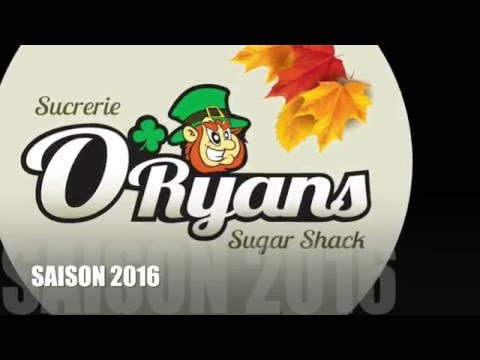
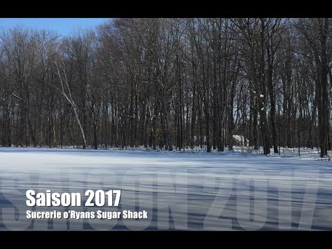

Depuis 2014
Un projet entre amis devenu une érablière bien structurée.
Plusieurs lignes, un système de vacuum et une production suivie de près, année après année.
Voir la page FacebookÀ propos
Chez O'Ryan's - Cabane à sucre, on entaille depuis 2014. Ce qui a commencé comme un projet entre amis est devenu une érablière bien structurée.
Chaque saison est différente — météo, gel/dégel, etc — mais la base reste la même : entailler, ramasser l'eau d'érable, bouillir jusqu'au sirop, puis mettre en cannes et en bouteilles.
Depuis 2014
Plusieurs lignes, un système de vacuum et une production suivie de près, année après année.
Voir la page FacebookProcessus
Étape 1
Étape 2
Étape 3
Étape 4
Calendrier
Cycle typique
Observations terrain
Opérations
L'équipement
Tire sur la neige
Opérations
Ce qui nous distingue
Archives

